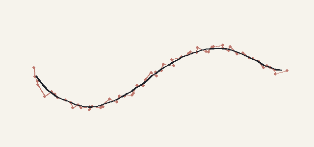
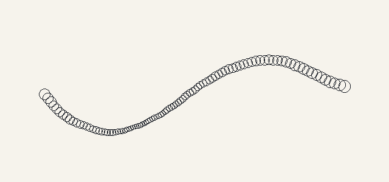
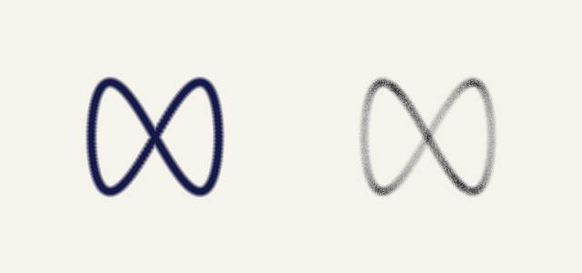
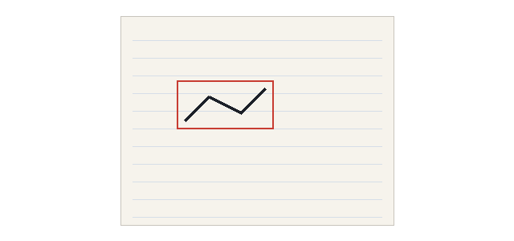

The goal
You have a journal you can draw in. We wanted the tools to feel like the real thing: a pen that lays down flat ink, a pencil that gets darker as you go over it, a crayon with some texture, and an eraser that rubs out pencil but not pen.
We also wanted the journal to be part of the world. You pick it up off your bedroom floor, and whatever you draw stays there for next time.
How it works
Each page is a texture, and all the painting happens on the CPU in plain pixel arrays. We keep three of them: the paper, an erasable ink layer and a permanent ink layer. The texture you see is built from those three, and only the bit that changed gets sent to the GPU each frame.
Every tool is its own settings asset, so adding a new one doesn't need any new code.
1. Cleaning up the input
Raw mouse movement is jittery. The pointer first has to leave a small dead zone before the line follows it, which kills the shake without rounding off sharp corners. Then the tip of the pen chases the pointer on a spring, and the points get joined with a spline so the curve is smooth.

2. Stamping along the line
The line is drawn as a row of soft round stamps, spaced evenly so how fast you move doesn't change how dense the line is. The stamp size follows your speed: fast strokes get thinner, slow ones fatter, like pressing harder on a real pen. Each stamp also gets a tiny random wobble so the line doesn't look like a perfect vector.

Inside each stamp, the edge softness comes from the tool's hardness, pencil and crayon get multiplied by the paper's grain so they catch on the texture, and a bit of noise roughens the outer edge.
3. How ink builds up
Stamps don't go straight onto the page. Each stroke has its own coverage buffer, a value from 0 to 255 per pixel. With the pen, each pixel keeps whichever stamp was darkest, so crossing your own line doesn't make it darker. With pencil and crayon the stamps add up, so going over a spot builds it up.

When you let go, the stroke gets blended into its layer. Pencil goes into the erasable layer, and pen, marker and crayon into the permanent one, which sits on top. The eraser only clears the erasable layer, so it rubs out pencil and never touches ink.
4. Updating the texture
While you draw, the code tracks the rectangle the current stroke has touched. Each frame it rebuilds just that rectangle, paper then erasable ink then permanent ink with the live stroke mixed in, and uploads only that part to the texture. The maths for the preview and the final blend is the same, so nothing jumps when you let go.

Each page's two ink layers are saved as PNGs, and loaded back over the page art next time you open the journal.
5. In the world
In the game, the journal is just lying in your room. Pick it up and it flies up to your face, then the drawing view opens over the blurred room.
The diagrams on this page were drawn with Python to show what the code does. The clip at the top is from the game.